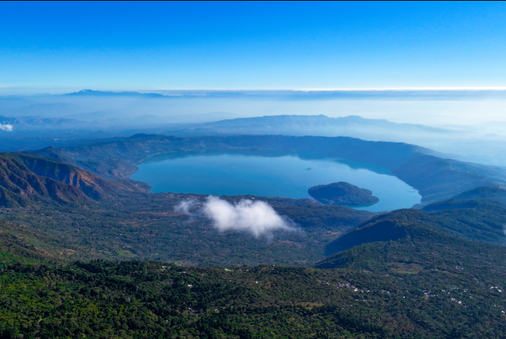
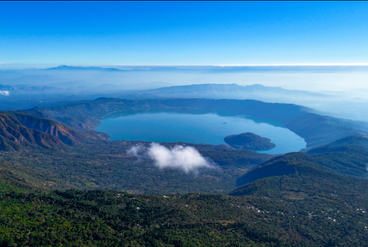
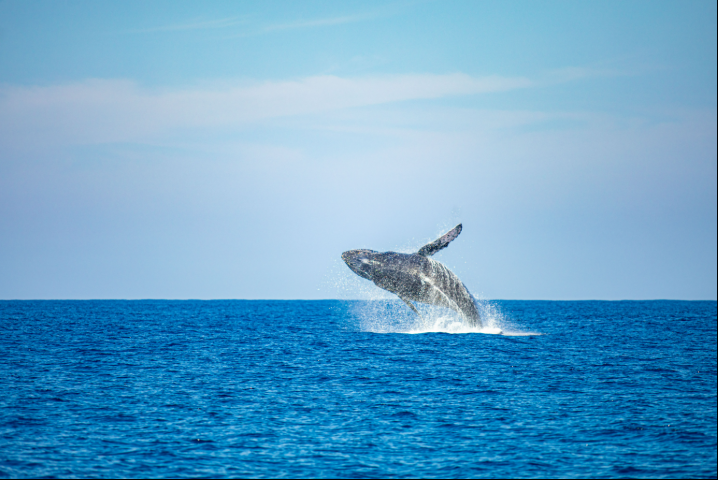
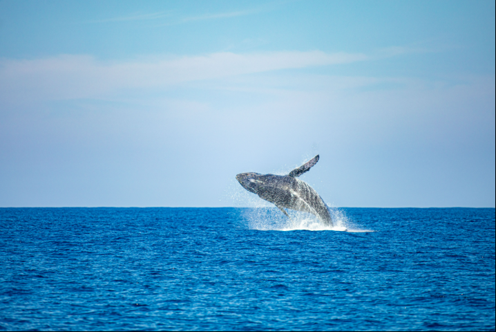

El Tunco + Tamanique Waterfalls
Relax on volcanic beaches and hike to hidden jungle waterfalls — perfect for adventure & sunset views.
Explore

El Pital Highland Escape
Discover El Salvador’s highest peak, cool cloud forests, and peaceful hiking trails.
Explore 

Ilamatepec Volcano & Lake Coatepeque
Climb an active volcano for crater views and relax by the turquoise crater lake below.
Explore

Los Chorros Natural Pools
Swim in fresh spring-fed pools beneath cascading waterfalls, just outside the capital.
Explore

Tazumal & Joya de Cerén
Step into Mayan history with ancient pyramids and UNESCO-preserved village ruins.
Explore

Crater & Capital Culture
Walk the crater rim of El Boquerón and discover the vibrant heart of San Salvador city.
Explore

Suchitoto Colonial Charm
Stroll cobbled streets, explore colonial architecture, and enjoy lake views in this cultural gem.
Explore

Ruta de las Flores & Cafe Albania
Explore artisan towns, coffee tours, murals, and unique attractions like the giant swing & zipline.
Explore 

Los Cóbanos Reef & Beach
Snorkel volcanic reefs, spot marine life, and enjoy fresh seafood by the Pacific shore.
ExploreSurf City 2 Coastal Adventure
Ride world-class waves, sunbathe on black sand beaches, and experience El Salvador's surf culture.
Explore